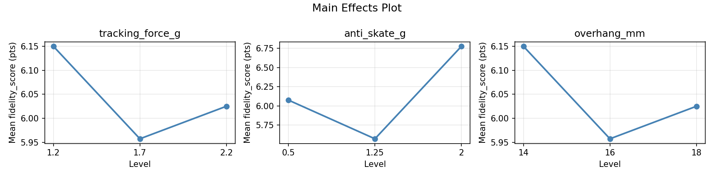
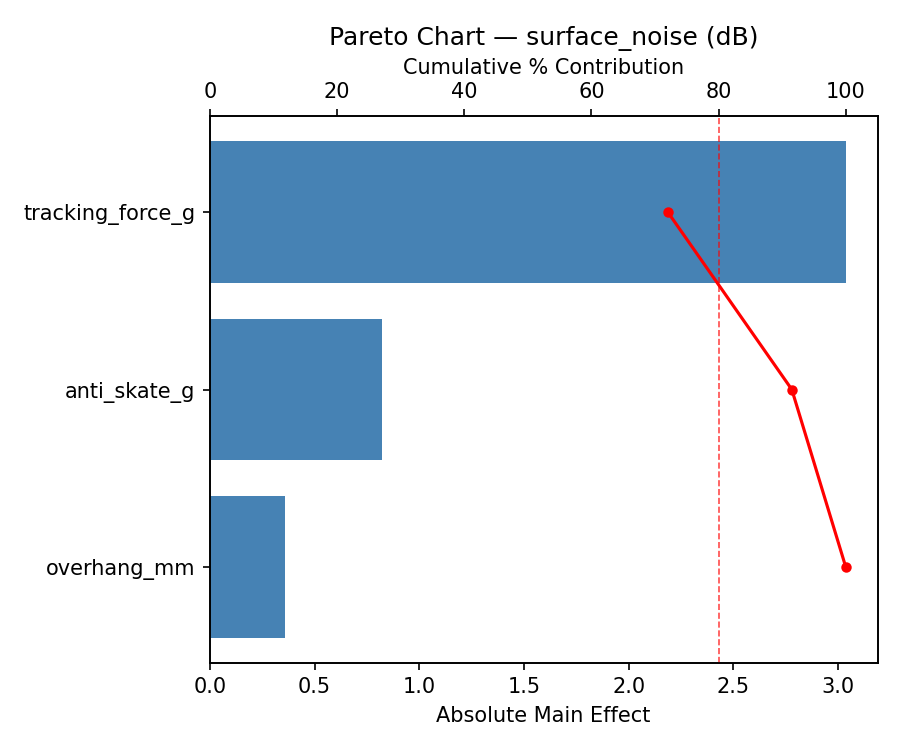
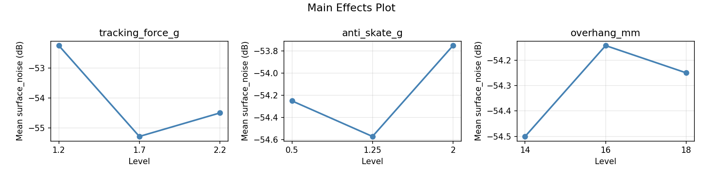
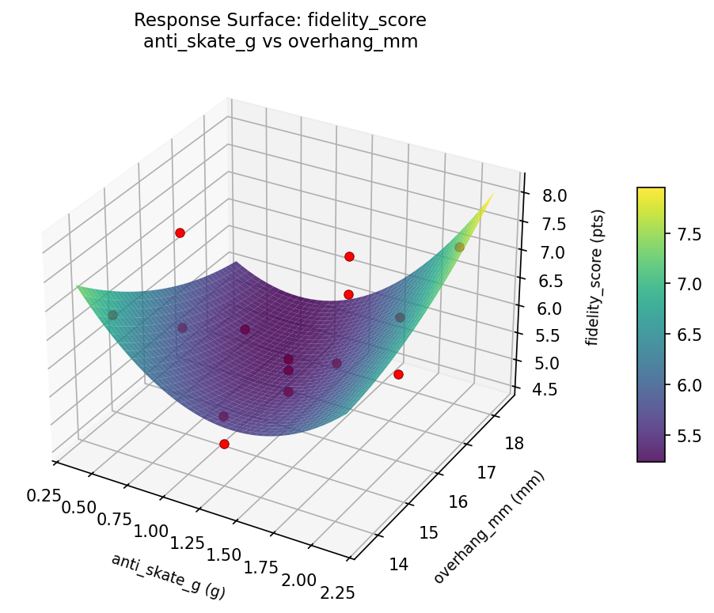
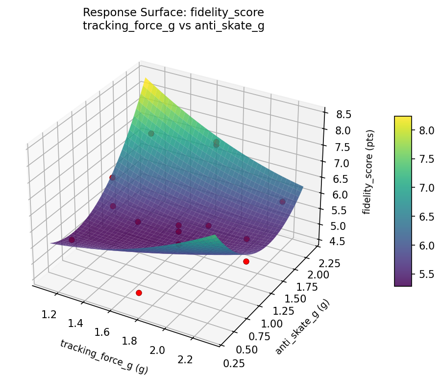
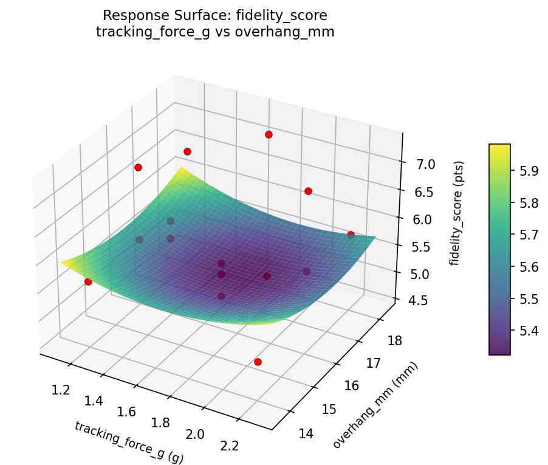
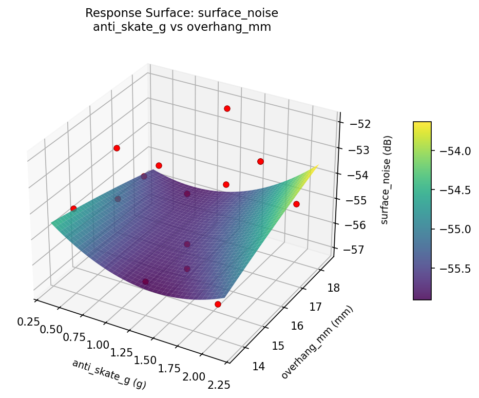
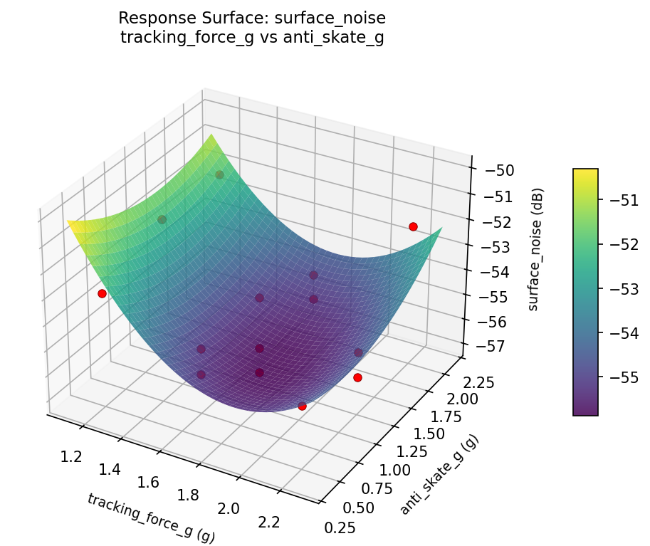
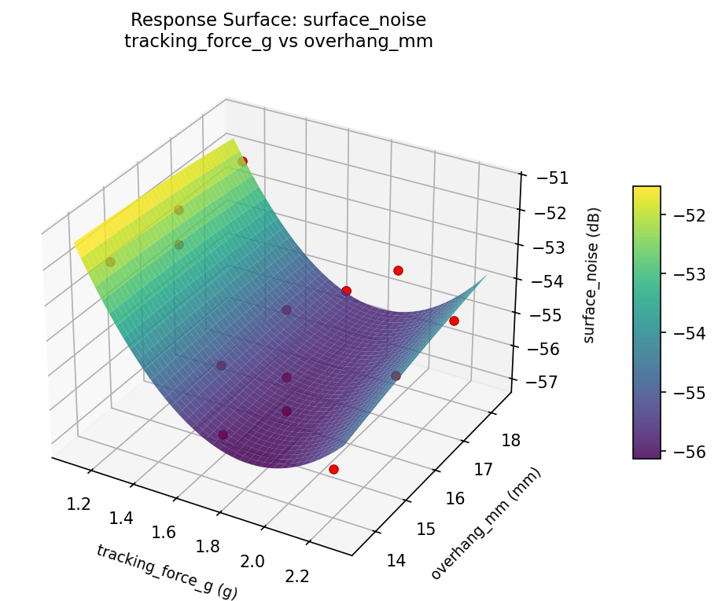

Summary
This experiment investigates vinyl playback optimization. Box-Behnken design to maximize audio fidelity and minimize surface noise by tuning tracking force, anti-skate, and cartridge alignment.
The design varies 3 factors: tracking force g (g), ranging from 1.2 to 2.2, anti skate g (g), ranging from 0.5 to 2.0, and overhang mm (mm), ranging from 14 to 18. The goal is to optimize 2 responses: fidelity score (pts) (maximize) and surface noise (dB) (minimize). Fixed conditions held constant across all runs include turntable = belt_drive, cartridge type = moving_magnet.
A Box-Behnken design was chosen because it efficiently fits quadratic models with 3 continuous factors while avoiding extreme corner combinations — requiring only 15 runs instead of the 8 needed for a full factorial at two levels.
Quadratic response surface models were fitted to capture potential curvature and factor interactions. The RSM contour plots below visualize how pairs of factors jointly affect each response.
Key Findings
For fidelity score, the most influential factors were anti skate g (75.7%), tracking force g (12.1%), overhang mm (12.1%). The best observed value was 7.3 (at tracking force g = 2.2, anti skate g = 2, overhang mm = 16).
For surface noise, the most influential factors were tracking force g (72.0%), anti skate g (19.5%), overhang mm (8.5%). The best observed value was -57.0 (at tracking force g = 2.2, anti skate g = 1.25, overhang mm = 14).
Recommended Next Steps
- Run confirmation experiments at the predicted optimal settings to validate the model.
- Consider whether any fixed factors should be varied in a future study.
Experimental Setup
Factors
| Factor | Low | High | Unit |
|---|
tracking_force_g | 1.2 | 2.2 | g |
anti_skate_g | 0.5 | 2.0 | g |
overhang_mm | 14 | 18 | mm |
Fixed: turntable = belt_drive, cartridge_type = moving_magnet
Responses
| Response | Direction | Unit |
|---|
fidelity_score | ↑ maximize | pts |
surface_noise | ↓ minimize | dB |
Configuration
{
"metadata": {
"name": "Vinyl Playback Optimization",
"description": "Box-Behnken design to maximize audio fidelity and minimize surface noise by tuning tracking force, anti-skate, and cartridge alignment"
},
"factors": [
{
"name": "tracking_force_g",
"levels": [
"1.2",
"2.2"
],
"type": "continuous",
"unit": "g"
},
{
"name": "anti_skate_g",
"levels": [
"0.5",
"2.0"
],
"type": "continuous",
"unit": "g"
},
{
"name": "overhang_mm",
"levels": [
"14",
"18"
],
"type": "continuous",
"unit": "mm"
}
],
"fixed_factors": {
"turntable": "belt_drive",
"cartridge_type": "moving_magnet"
},
"responses": [
{
"name": "fidelity_score",
"optimize": "maximize",
"unit": "pts"
},
{
"name": "surface_noise",
"optimize": "minimize",
"unit": "dB"
}
],
"settings": {
"operation": "box_behnken",
"test_script": "use_cases/159_vinyl_playback/sim.sh"
}
}
Experimental Matrix
The Box-Behnken Design produces 15 runs. Each row is one experiment with specific factor settings.
| Run | tracking_force_g | anti_skate_g | overhang_mm |
|---|
| 1 | 1.7 | 0.5 | 14 |
| 2 | 1.7 | 1.25 | 16 |
| 3 | 2.2 | 1.25 | 18 |
| 4 | 2.2 | 1.25 | 14 |
| 5 | 1.7 | 1.25 | 16 |
| 6 | 1.7 | 1.25 | 16 |
| 7 | 1.2 | 1.25 | 18 |
| 8 | 2.2 | 0.5 | 16 |
| 9 | 1.7 | 0.5 | 18 |
| 10 | 2.2 | 2 | 16 |
| 11 | 1.2 | 1.25 | 14 |
| 12 | 1.7 | 2 | 18 |
| 13 | 1.2 | 0.5 | 16 |
| 14 | 1.2 | 2 | 16 |
| 15 | 1.7 | 2 | 14 |
Step-by-Step Workflow
1
Preview the design
$ python doe.py info --config use_cases/159_vinyl_playback/config.json
2
Generate the runner script
$ python doe.py generate --config use_cases/159_vinyl_playback/config.json \
--output use_cases/159_vinyl_playback/results/run.sh --seed 42
3
Execute the experiments
$ bash use_cases/159_vinyl_playback/results/run.sh
4
Analyze results
$ python doe.py analyze --config use_cases/159_vinyl_playback/config.json
5
Get optimization recommendations
$ python doe.py optimize --config use_cases/159_vinyl_playback/config.json
6
Generate the HTML report
$ python doe.py report --config use_cases/159_vinyl_playback/config.json \
--output use_cases/159_vinyl_playback/results/report.html
Features Exercised
| Feature | Value |
|---|
| Design type | box_behnken |
| Factor types | continuous (all 3) |
| Arg style | double-dash |
| Responses | 2 (fidelity_score ↑, surface_noise ↓) |
| Total runs | 15 |
Analysis Results
Generated from actual experiment runs using the DOE Helper Tool.
Response: fidelity_score
Top factors: anti_skate_g (75.7%), tracking_force_g (12.1%), overhang_mm (12.1%).
Pareto Chart

Main Effects Plot

Response: surface_noise
Top factors: tracking_force_g (72.0%), anti_skate_g (19.5%), overhang_mm (8.5%).
Pareto Chart

Main Effects Plot

Response Surface Plots
3D surfaces fitted with quadratic RSM. Red dots are observed data points.
fidelity score anti skate g vs overhang mm

fidelity score tracking force g vs anti skate g

fidelity score tracking force g vs overhang mm

surface noise anti skate g vs overhang mm

surface noise tracking force g vs anti skate g

surface noise tracking force g vs overhang mm

Full Analysis Output
RSM surface: rsm_fidelity_score_tracking_force_g_vs_anti_skate_g.png
RSM surface: rsm_fidelity_score_tracking_force_g_vs_overhang_mm.png
RSM surface: rsm_fidelity_score_anti_skate_g_vs_overhang_mm.png
RSM surface: rsm_surface_noise_tracking_force_g_vs_anti_skate_g.png
RSM surface: rsm_surface_noise_tracking_force_g_vs_overhang_mm.png
RSM surface: rsm_surface_noise_anti_skate_g_vs_overhang_mm.png
=== Main Effects: fidelity_score ===
Factor Effect Std Error % Contribution
--------------------------------------------------------------
anti_skate_g 1.2036 0.2256 75.7%
tracking_force_g 0.1929 0.2256 12.1%
overhang_mm 0.1929 0.2256 12.1%
=== Summary Statistics: fidelity_score ===
tracking_force_g:
Level N Mean Std Min Max
------------------------------------------------------------
1.2 4 6.1500 0.6557 5.6000 6.9000
1.7 7 5.9571 1.0612 4.6000 7.2000
2.2 4 6.0250 0.9215 5.1000 7.3000
anti_skate_g:
Level N Mean Std Min Max
------------------------------------------------------------
0.5 4 6.0750 1.2148 4.6000 7.3000
1.25 7 5.5714 0.4990 5.0000 6.5000
2 4 6.7750 0.5965 5.9000 7.2000
overhang_mm:
Level N Mean Std Min Max
------------------------------------------------------------
14 4 6.1500 0.9539 5.1000 7.1000
16 7 5.9571 0.8344 5.0000 7.3000
18 4 6.0250 1.1087 4.6000 7.2000
=== Main Effects: surface_noise ===
Factor Effect Std Error % Contribution
--------------------------------------------------------------
tracking_force_g 3.0357 0.4415 72.0%
anti_skate_g 0.8214 0.4415 19.5%
overhang_mm 0.3571 0.4415 8.5%
=== Summary Statistics: surface_noise ===
tracking_force_g:
Level N Mean Std Min Max
------------------------------------------------------------
1.2 4 -52.2500 0.5000 -53.0000 -52.0000
1.7 7 -55.2857 1.1127 -57.0000 -54.0000
2.2 4 -54.5000 1.7321 -56.0000 -52.0000
anti_skate_g:
Level N Mean Std Min Max
------------------------------------------------------------
0.5 4 -54.2500 0.9574 -55.0000 -53.0000
1.25 7 -54.5714 1.9881 -57.0000 -52.0000
2 4 -53.7500 2.0616 -56.0000 -52.0000
overhang_mm:
Level N Mean Std Min Max
------------------------------------------------------------
14 4 -54.5000 1.9149 -56.0000 -52.0000
16 7 -54.1429 1.9518 -57.0000 -52.0000
18 4 -54.2500 1.5000 -55.0000 -52.0000
Pareto chart (fidelity_score): use_cases/159_vinyl_playback/results/analysis/pareto_fidelity_score.png
Pareto chart (surface_noise): use_cases/159_vinyl_playback/results/analysis/pareto_surface_noise.png
Main effects (fidelity_score): use_cases/159_vinyl_playback/results/analysis/main_effects_fidelity_score.png
Main effects (surface_noise): use_cases/159_vinyl_playback/results/analysis/main_effects_surface_noise.png
Optimization Recommendations
=== Optimization: fidelity_score ===
Direction: maximize
Best observed run: #6
tracking_force_g = 2.2
anti_skate_g = 2
overhang_mm = 16
Value: 7.3
RSM Model (linear, R² = 0.3003, Adj R² = 0.1095):
Coefficients:
intercept +6.0267
tracking_force_g -0.4000
anti_skate_g +0.4750
overhang_mm +0.1250
RSM Model (quadratic, R² = 0.5238, Adj R² = -0.3333):
Coefficients:
intercept +5.8000
tracking_force_g -0.4000
anti_skate_g +0.4750
overhang_mm +0.1250
tracking_force_g*anti_skate_g -0.1000
tracking_force_g*overhang_mm -0.3000
anti_skate_g*overhang_mm +0.4500
tracking_force_g^2 +0.4750
anti_skate_g^2 +0.1750
overhang_mm^2 -0.2250
Curvature analysis:
tracking_force_g coef=+0.4750 convex (has a minimum)
overhang_mm coef=-0.2250 concave (has a maximum)
anti_skate_g coef=+0.1750 convex (has a minimum)
Notable interactions:
anti_skate_g*overhang_mm coef=+0.4500 (synergistic)
Predicted optimum (from linear model):
tracking_force_g = 1.2
anti_skate_g = 2
overhang_mm = 16
Predicted value: 6.9017
Model quality: Weak fit — consider adding center points or using a different design.
Factor importance:
1. anti_skate_g (effect: 1.0, contribution: 42.7%)
2. tracking_force_g (effect: 0.9, contribution: 39.5%)
3. overhang_mm (effect: 0.4, contribution: 17.8%)
=== Optimization: surface_noise ===
Direction: minimize
Best observed run: #7
tracking_force_g = 2.2
anti_skate_g = 1.25
overhang_mm = 14
Value: -57.0
RSM Model (linear, R² = 0.2626, Adj R² = 0.0615):
Coefficients:
intercept -54.2667
tracking_force_g -0.2500
anti_skate_g -1.1250
overhang_mm -0.1250
RSM Model (quadratic, R² = 0.6478, Adj R² = 0.0138):
Coefficients:
intercept -54.3333
tracking_force_g -0.2500
anti_skate_g -1.1250
overhang_mm -0.1250
tracking_force_g*anti_skate_g -0.5000
tracking_force_g*overhang_mm +1.5000
anti_skate_g*overhang_mm +0.7500
tracking_force_g^2 -0.4583
anti_skate_g^2 +0.7917
overhang_mm^2 -0.2083
Curvature analysis:
anti_skate_g coef=+0.7917 convex (has a minimum)
tracking_force_g coef=-0.4583 concave (has a maximum)
overhang_mm coef=-0.2083 concave (has a maximum)
Notable interactions:
tracking_force_g*overhang_mm coef=+1.5000 (synergistic)
anti_skate_g*overhang_mm coef=+0.7500 (synergistic)
tracking_force_g*anti_skate_g coef=-0.5000 (antagonistic)
Predicted optimum (from linear model):
tracking_force_g = 1.2
anti_skate_g = 0.5
overhang_mm = 16
Predicted value: -52.8917
Model quality: Weak fit — consider adding center points or using a different design.
Factor importance:
1. anti_skate_g (effect: 2.2, contribution: 67.0%)
2. tracking_force_g (effect: 0.8, contribution: 22.3%)
3. overhang_mm (effect: 0.4, contribution: 10.6%)